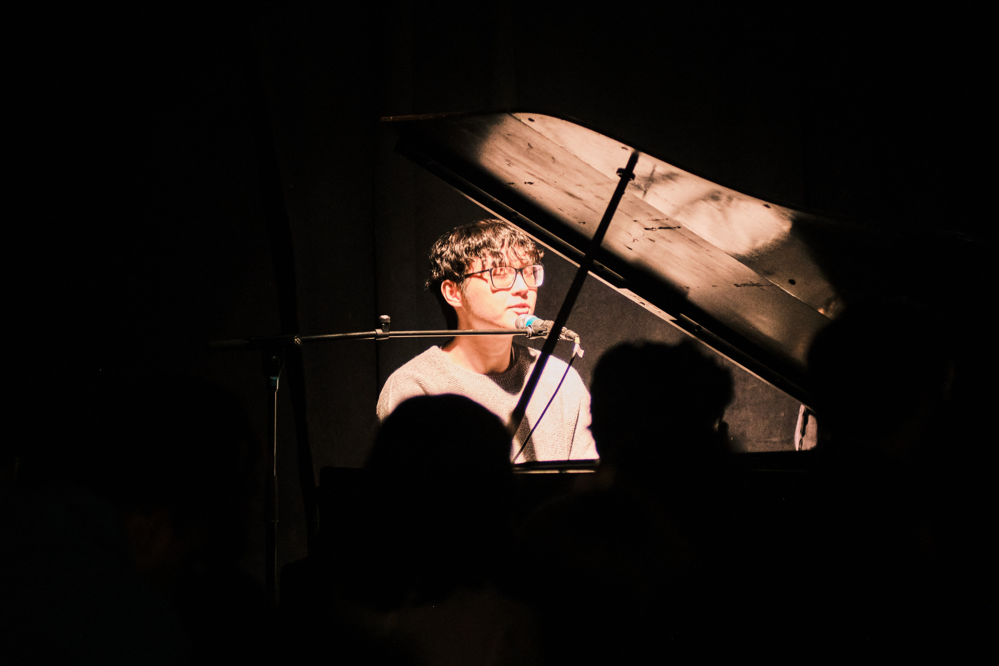
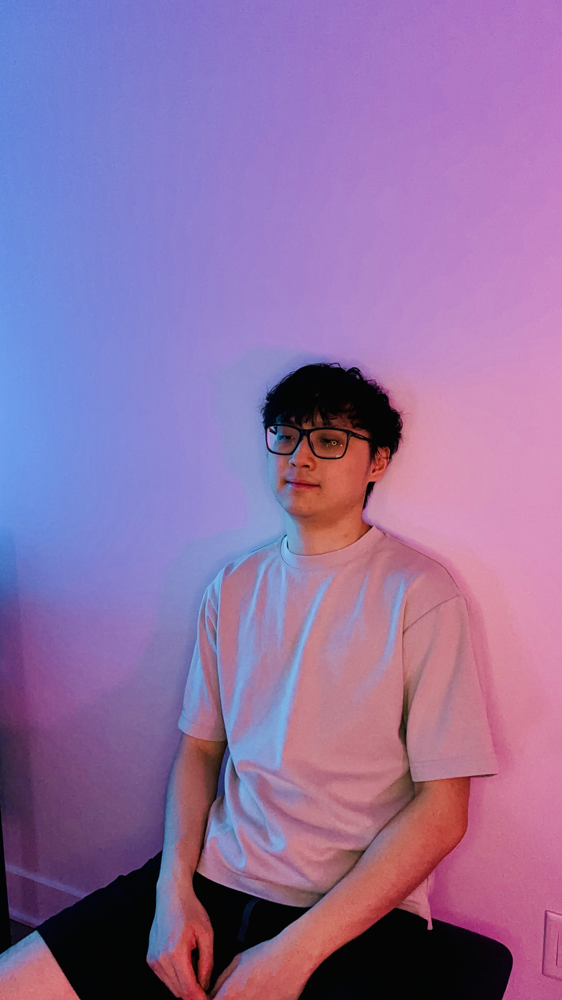

If our love is pure we could run free
Thomas Live


Press
"…"
Selected press and playlist features will appear here as they land.
There's nothing sweeter than kissing you
or this Ferris wheel romance
"Ferris Wheel Romance" — out now. Debut single · April 17, 2026 · Recorded in Montreal
Take my hand, teach me the way that you dance

Thomas Lai writes intimate, personal songs and produces them like theatre.
Thomas Lai is a Taiwanese-Canadian singer-songwriter based in Montreal. His music moves freely between rock, synth, and theatrical pop, maximalist by instinct and built with his signature grand choir stacks. The closest living touchpoint of his sound would be Rina Sawayama, who covers similar elements.
When it comes to songwriting, he commits to melody-lyric integration, rhyme as structural discipline, and songs engineered to build toward emotional payoff, influenced by his songwriting heroes Stephen Schwartz, Lin-Manuel Miranda, and Jonathan Larson above all. Musical theatre is also the source of his tenor belt-forward vocal style, which draws from Aaron Tveit and Jeremy Jordan, who he looks up very much.
Live, he strips everything back to voice and piano, where the voice carries the room. His debut single "Ferris Wheel Romance," recorded in Montreal and released April 17, 2026, is a theatrical piece about a queer first romance set in a 2000s emotional pop-rock palette, written for the kids living it now and the older listeners who feel they missed it.
If our love is pure we could run free

"…"
Selected press and playlist features will appear here as they land.
There's nothing sweeter than kissing you
or this Ferris wheel romance
High-resolution photos, WAV files, instrumental and a cappella versions available on request. CanCon designation: MALP.